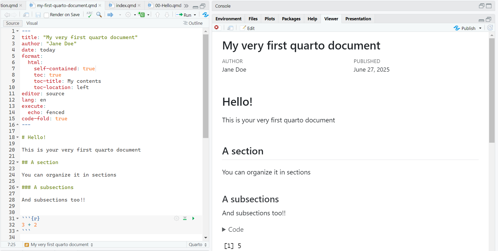

knitr::include_graphics("img/q_source.png")
The overall appearance and behavior of the document is specified in the YAML:
---
title: "Untitled"
format: html
editor: visual
---. . .
---
title: "Untitled"
format: pdf
editor: visual
---Table of Contents (ToC)Allows for the sharing of the hmtl file without requiring for external files
Put Table of Contents
Define the title of the ToC
Location of the ToC (left, right, body)
Define the language of the documents
The default theme of the document can be modified with the predefined themes
Define the theme
Define the font size (other options are available)
Section
Subsection
Sub-subsection
Paragraph
I frankly have never used that
I have no idea
Markdown syntax: Font
Output
italics, bold, bold italics
. . .
Markdown syntax: Scripts
Output
textsuperscirpt2, textunderscript2
. . .
Markdown syntax: In line code
Output
this is myinline code
. . .
My link is here
. . .
In-line math:
This is an in-line equation \(y = \beta_0 + \beta_1 X + \varepsilon\)
. . .
Math math:
This is an equation \[z = \dfrac{\bar{x} -\mu}{\sigma}\]
@Manual{rsoft,
title = {R: A Language and Environment for Statistical Computing},
author = {{R Core Team}},
organization = {R Foundation for Statistical Computing},
address = {Vienna, Austria},
year = {2025},
url = {https://www.R-project.org/}
}
@Book{ggplot,
author = {Hadley Wickham},
title = {ggplot2: Elegant Graphics for Data Analysis},
publisher = {Springer-Verlag New York},
year = {2016},
isbn = {978-3-319-24277-4},
url = {https://ggplot2.tidyverse.org}
}
@article{epifania2024,
title={A guided tutorial on linear mixed-effects models for the analysis of accuracies and response times in experiments with fully crossed design.},
author={Epifania, Ottavia M and Anselmi, Pasquale and Robusto, Egidio},
journal={Psychological Methods},
year={2024},
publisher={American Psychological Association},
doi={https://doi.org/10.1037/met0000708}
}| Key | Output |
|---|---|
@ggplot does this |
Wickman (2016) does this |
ggplot2 is an interesting package [@ggplot2] |
ggplot2 is an interesting package (Wickman, 2016) |
bla bla bla [@epifania2024; @ggplot2] |
bla bla bla (Epifania et al., 2024; Wickman, 2016) |
. . .
To call a reference:
Navigate to your GitHub repository online:
(take some time, be patient)
README.mdThis file handles the generation of the website
It works with basic markdown syntax
They create the index to the pages we want to display in our website
The links must link to the directory of the html file in the subfolder of the project!
. . .
Let’s say we want to create a link to my_file.html that is inside the files subfolder:
Don’t forget to save the changes in the README.md file
commit + pushDon’t forget to push!
Inside your R project for this school:
Create a new HMTL quarto document that must contain:
Render the document in HTML
Create the link to your newly created document in the README.md
Commit & push the .qmd and .html of your newly created document
Commit & push the .md and .html of the README file
By default, the HTML document is set to take all the space in the page
You can place anything in the margins of the documents!
The page layout is based on a 12-unit (or 12-column) grid system, which can be used to divide the space accordingly:
(Best for HMTL presentation)
To say something general
Maybe a tip :)
Please pay attention to whatever it is written here
Just saying you should be careful
I collapse (Actually you can’t see the callout collapsing, just copy & paste in your file)
::: {.callout-warning collapse="true"}
## Look at me!!
I collapse (Actually you can't see the callout collapsing, just copy & paste in your file)
:::
::: {.callout-tip icon="false"}
## I'm not an icon
I removed the icon from this specific callout.
If you want to remove the icons from **all** the blocks, go in the YAML:
:::From the previous document: